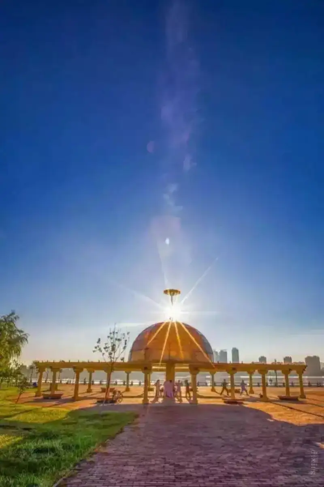
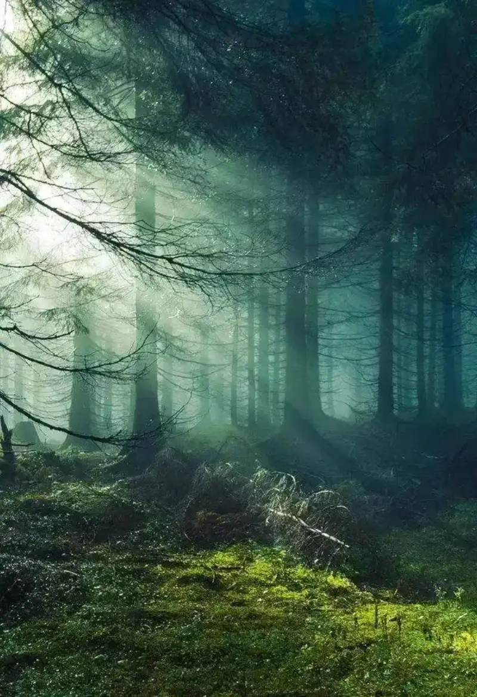

Published: 2022-07-12
Original link: https://www.cnphotos.net/academy/show-68.html
Photography is the shooting of light and shadow. But when you face the sunlight you see every day, do you feel stuck on where to start? Here are a few tips for shooting sunlight.
Sun flare is easy to shoot, but a clean and clear starburst in the frame does take some skill.
Many people look straight through the viewfinder at the sun. This is dangerous, especially with a telephoto lens. Direct strong light can cause temporary blindness. So never look at the sun through the viewfinder.
Choose a backlit setting, turn on live view on the screen, and use spot metering with exposure compensation. Use an obstruction (let a building or leaves block part of the sun) to make the starburst show more clearly.
Remember: starbursts rely on a small aperture, basically f11 to f14.
To get a sun starburst, also keep the sun itself small in the frame. The closer it is to a point, the easier the starburst shows.
So, if you use a wide-angle lens for a big landscape and include a small sun in the frame, that is the easiest way to get this starburst effect.

When you shoot the sun, a wide aperture spreads the light source, and the sun becomes a fluffy big ball. A small aperture makes the sun closer to a point.
Even though the sun is small in the frame, overexposing it will not hurt the picture much. But if the sun is overexposed, the starburst will not show clearly.
If your camera has HDR, turn it on. Without HDR, post-processing is also a good way.
The rule for exposure stays the same: underexpose rather than overexpose. Avoid overexposure first, and still keep an eye on shadow detail.
Most people who shoot today do some post-processing. When they shoot, they mostly ignore the camera's picture settings. But if you set the parameters with care, the results often save you a lot of extra work later.
It is autumn now. Let us use shooting sunlit leaves as an example. If you can bring out the texture of the light, you will see the rich colors in the light.
Choose landscape mode. Landscape mode leans toward vivid colors. If you want it even more vivid, you can also set the parameters. The settings are as follows:
Meter on the backlit leaves, take a test shot, and if the frame is not bright enough, raise the exposure compensation.
In landscape photography, especially with colorful leaves, high saturation makes the colors more vivid. But if you shoot people, use high saturation and sharpness with care.
When you shoot people, everyone likes fair, bright skin. High saturation makes the skin look wrong.
A person shot in landscape mode: the frame is vivid, but the skin looks wrong.
A person shot in portrait mode: the frame is clean, and the fair skin looks more natural.
People love to post sunlit photos to their friends. That is because sunlit photos bring a good mood. So when the sun is out, take your camera and go for a walk.
Warm, gentle sunlight always makes you want to step outside and relax without trying.
Note: get the shooting time right. The texture and effect of light in the morning, noon, and evening differ a lot. The morning sun is golden and warm. The midday sun looks white.
Camera settings: aperture F18, focal length 135mm, ISO 200, shutter speed 1/640 s
It leaves the frame without outline or depth, and it is also pretty for shooting bokeh.
Camera settings: aperture F8, focal length 102mm, ISO 200, shutter speed 1/160 s
Shooting the sunset and silhouettes in the evening is the most beautiful.
To give you more ideas for shooting light, we picked some great sunlight photos for reference.
